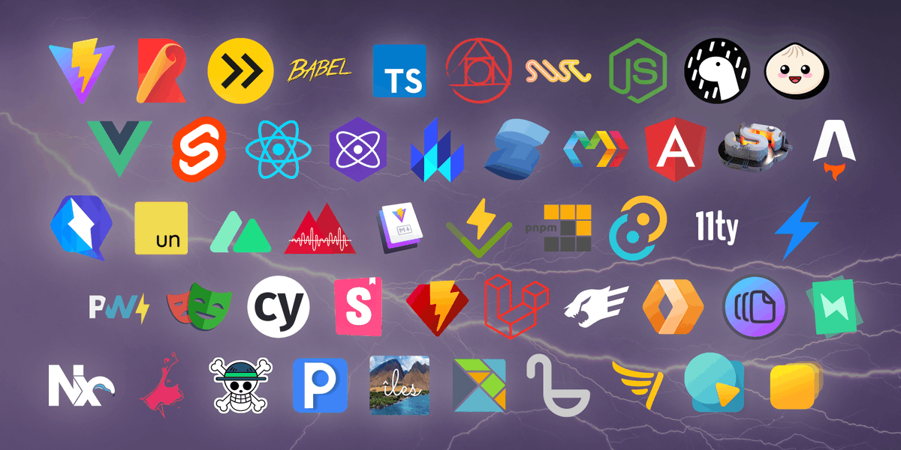

## Part 2 ### Developer Workflow -- ### Goals - Keep practicing what we've seen so far - Get familiar with common dev workflows - Build a client-side app with modern tooling - Deploy a project site to production -- ### Ready? # Let's go!
## JS outside the Browser <img src="../assets/node.png" alt="Node.js logo" width="500" /> -- ### Node.js [nodejs.org](https://nodejs.org) - Server-side JS runtime based on V8 - Con: Doesn't get all the Browser's APIs - Pro: Has its own system-related interfaces -- - Download & Install - Open a new Terminal window - Check that it's working: ``` $ node --version 20.10.0 $ node > console.log('hello world') ``` -- ### Running Node scripts ```js // whereAmI.js console.log('You are here:'); const currentDir = process.cwd(); setTimeout(() => console.log(currentDir), 1000); ``` ``` $ node whereAmI.js ``` -- ### Browser vs. Node APIs <span></span> | Browser | Node -- | -- | -- setTimeout | y | y process | n | y window | y | n -- <img src="../assets/npm.png" alt="npm logo" width="500" /> ### [npmjs.com](https://npmjs.com) - Package manager for JS (but not the only one!) - Comes with Node - 2+ million packages!! -- ### Creating a new package ``` $ mkdir where-am-i $ mv whereAmI.js where-am-i/ $ cd where-am-i $ npm init ``` -- ### `package.json` ```json { "name": "where-am-i", "version": "1.0.0", "description": "Find out where your JS script is running", "main": "whereAmI.js", "scripts": { "test": "echo \"Error: no test specified\" && exit 1" }, "author": "Anjana", "license": "ISC" } ``` -- ### Running scripts ``` $ npm run test Error: no test specified ``` -- ### Custom scripts ``` "scripts": [ "find-me": "node whereAmI.js" ] ``` ``` $ npm run find-me ``` -- ### Installing dependencies ``` $ npm install cowsay ``` or ``` $ npm i cowsay ``` -- ### Using dependencies ```js import { say } from 'cowsay' const currentDir = process.cwd(); const message = 'Moo are here:\n' + currentDir console.log(say({ text: message})); ``` -- ### Modules in JS (and other problems) -- - 1995: JS is just for click handling, right? - 2010s: Node.js & server-side complexity - now: Massive client-side projects -- ### CommonJS modules Original Node module system, still around ```js const cowsay = require('cowsay'); module.exports = { mooove: () => cowsay.say({text: 'Get going'}) }; ``` -- ### ECMAScript modules The new(ish) hotness, supported by browsers too ```js import { say } from 'cowsay'; export const mooove = () => cowsay.say({text: 'Get going'}) ``` -- ### ESM FTW  -- ### In the browser ```html <script type="module"> // import away </script> ``` -- ### In Node Option 1: `.mjs` extension Option 2: `"type": "module"` in `package.json` -- ``` % npm run find-me > where-am-i@1.0.0 find-me > node whereAmI.js _____________________________________ / Moo are here: \ \ /Users/anjana/Dev/vakila/where-am-i / ------------------------------------- \ ^__^ \ (oo)\_______ (__)\ )\/\ ||----w | || || ```
## Modern JS development  -- ### The modern web is a blessing...  -- ### ...and a curse  -- - 1995: Web pages get a little JS, as a treat - 2010s: Tooling evolves to bundle & optimize large apps (pre-ESM) - now: Massive JS projects, super complex workflows -- -- Not to worry, the community has come up with helpful tools & frameworks!  -- -- ### Battling the web dev overwhelm - Principles > Tools - If it fits, it sits - Stay open to change
## Vite [vitejs.dev](https://vitejs.dev) <img alt="Vite logo" src="../assets/vite.png" width="300" /> -- ### Why for JS? - Fancy dev features - Supports lots of frameworks - Extensible plugins -- ### Why for this course? - Approachable (imo) - Pretty widely used - Suits a single-page app - Lots of rabbit holes for the curious -- ### Our first Vite app ``` $ npm create vite@latest ``` Uses `create-vite` npm package to bootstrap a project from a template
## Vite Selfie Cam -- ## Moar Browser APIs! ### `getUserMedia` ```js const avStream = await navigator.mediaDevices.getUserMedia({ audio: true, video: true }); ``` -- ### Videos ```js const video = document.querySelector('video'); video.srcObject = avStream; await video.play(); ``` -- ### Canvas ```js const canvas = document.querySelector('canvas'); const context = canvas.getContext("2d"); context.fillStyle = "yellow"; context.fillRect(0, 0, 100, 100); // (x, y, width, height) ``` -- ``` context.fillStyle = "black"; context.font = "50px sans-serif"; context.fillText("JS", 40, 90, 50); // (text, x, y, maxWidth) ```  -- ### Canvas + Image/Video ```js context.drawImage(video, 0, 0); // (x, y) ```